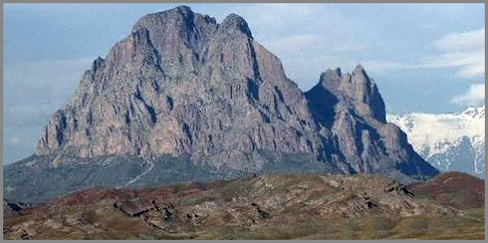

1. Հեքիաթ Խճանկարից Կորսված Իրականության Մասին
 |
Անգլիացի գիտնական Ռոբերտ Բոյլն ու Ֆրանսիացի գիտնական Էդմե Մարիոտը փորձնական ճանապարհով մի օրենք հայտնաբերեցին իզոթերմ/հին հունարենից՝ Իզո-հաստատուն և թերմ-ջերմաստիճան/ վիճակում գտնվող գազի մակրոսկոպիկ պարամետրերի հարաբերության հաստատուն մնալու մասին:
Համաձայն այս օրենքի, որոշակի անփոփոխ քանակի և հաստատուն ջերմաստիճանում գտնվող գազի փոփոխվող ճնշման և ծավալի արտադրյալը մնում է հաստատուն ընդմիշտ, ի տարբերություն կատարելության և ազատության արտադրյալի, որն աճում է շռնդալից արագությամբ, գերազանցելով անսահմանության շեմը:
Երկնքից երեք խնձոր ընկավ, երեքն էլ փչացած:
Հոգնածությունից աչքերը կուլ էին գնում: Փլվեց բազկաթոռին, ձեռքն առավ հեռուստացույցի հեռակառավարման վահանակը, միացրեց հեռուստացույցը... ալիքից-ալիք էր անցնում աննպատակ, հոգնածությունից ննջում էր երբեմն, երբեմն էլ կարծես քուն էր մտնում ու թուլացած մատների արանքից, հեռուստակառավարման վահանակը կարծես նրա արձակած խռմփոցից վախեցած, սահում էր դեպի հատակը: Հատակին՝ վահանակի կաթոցից, թե հեռուստացույցի արձակած բարձր ձայներից, մերթընդմերթ վեր էր թռնում երանելի նինջից, ջղաձիգ շարժումներով փնտրում էր վահանակը, զարմանքով այն բարձրացնում էր հատակից, ու կրկին սեղմում էր վահանակի իր համար ամենապահանջված կոճակը՝ հաջորդը, հաջորդը, հաջորդը... ընդարմացած գիտակցությունից դուրս, մատը բնազդաբար սեղմում էր վահանակի կոճակը, իսկ հոգնատանջ մարմինը, որը ստիպված ընդունել էր բազկաթոռի ձևը, երազում էր ու կարոտ էր ջերմության... Գլխում, գիտակցությունից դուրս, հեռուստացույցի օրոր ասող աղմուկն էր, առանց որի նա վաղուց քնել չէր կարողանում:
Առավոտ էր: Ամեն օր առավոտ կանուխ տատն արթնանում, խորը հառաչելով վեր էր կենում անկողնուց, մոտենում էր պատուհանին, որը նայում էր դեպի անառիկ սարերի սրտում, հրաշագեղ բնության գրկում ծվարած գյուղի տակով հոսող գետին, բացում էր այն, խամրած աչքերը սահեցնում էր լեռնաշղթայով, մի պահ կանգ էր առնում լեռներից մեկի գագաթին աճած մենվոր, առասպելական, դարավոր տանձենու կերպարանքին, հետո փնտրում էր վաղորդյան մշուշում ոչ հաճախ երևացող բարձրաբերձ մի գագաթ և մրմնջում էր ապուտատերից լսած աղոթքներից մեկը՝ երբեմն անհասկանալի և անմեկնաբանելի բառերի շարանով, երբեմն էլ հստակ արտասանելով բառերը: Այս ընթացքում տատի ականջներից կախված, ժառանգությամբ, անհիշելի ժամանակներից իրեն հասած ոսկյա գինդերը ցնցվում էին, արձանագրելով նրա հոգու ելևէջները: Տատն աղոթքը սկսում և ավարտում էր Է՜յ սարի սուրբ Միշամ... սրբին ուղղված բառերով: Հետո հագնվում էր, դուրս էր գալիս ու պապական տան սյուներից մեկին մեխած ջրամանը լցնում էր առվից բերած սառնորակ ջուրը և լվացվում էր անհագ կարոտով դեպիր ջուրը, որն արդեն դարեր ի վեր հոսում էր նույն ճանապարհով: Այս ամենի ականատես դարավոր տանձենին մեղմիկ սոսափում էր վաղորդյան քամուց: Լվացվում, հարդարում էր սպիտակ մազերը իր տատից նվեր ստացած փայտե սանրով՝ ընկղմվելով հուշերի հորձանուտը:
Օճորքի գերաններից աղմուկ լսվեց: Տատը գիտեր այդ ձայնը: Գերաններին փաթաթված սպիտակ օձը զգացել էր տատի ներկայությունը և կերակուր ստանալու ակնկալիքով իր երկար մարմինը դանդաղ սահեցնում էր գերանների վրայով: Դա տան գոյության անհիշելի ժամանակներից այդտեղ բնավորված օձի սերունդն էր... տատը անշտապ շարծումներով կաթ լցրեց կավե ոչ խորը ամանի մեջ, չորացած լավաշի մի կտոր մանրեց ամանի մեջ և օձինը օձին, աստծունը աստծուն բառերը մրմնջալով ամանը դրեց գերանի տակ ու հեռացավ, օձին չխանգարելու համար: Հեռացավ ու հեռվից հետևեց օձին, որը դանդաղ, բայց վստահ մոտեցավ և ճաշակեց իր հասանալիքը: Հետո նույն ճանապարհով անհետացավ և ձուլվեց օճորքի գերաններին:
Արևն իր բոսոր առաջին շողերը սփռեց լանջն ի վար, հիշեցնելով Վահագնի ծնունդը: Բոսոր շողերից մեկն ընկավ փայտյա հինավուրց թախտին փռված ձեռագործ կարպետին, որի վրա խամրած բնական գույնի թելերով պատկերված էր քառագույն, իրար ագուցված Z տառերը հիշեցնող հավերժության ժանյակներ: Աքլորականչ էր:
Արթնացավ: Հեռուստացույցն իրեն-իրեն անջատվել էր: Հեղձուկ կեսգիշեր էր: Ծարավից կարկամել էր: Քրտինքը գլուլ-գլուլ հոսում էր վզով, մեջքով: փորձեց վեր կենալ: Դժվարությամբ հասավ խոհանոց, բացեց ջրի ծորակը: Ջուր չկար: խմեց շշի միջի տաքացած քլորահամ ջուրը և զզվանքով ծամածռվեց: Հիշեց տատուն, հորը, որոնք վաղուց չկային… Է՜յ սարի սուրբ Միշամ: Քաղաքը, որում ապրում էր, ամեն օր փորձում էր կլանել նրան՝ կլանել, տանել իր եռացող հորձանուտը, փոխել, ջնջել նրա ինքնությունն ու էությունը: Համարյա ստացվել էր:
Նա կապվել էր հոգսի անքակտելի կապանքներով: Կապվել էր քաղաքին, գիտելիքին, թվացյալ պատրանքով առաջ էր մղվում չգիտես ուր, մրցելով ինքն իր հետ: Արթնացավ: Էլ քնել չի լինի: Գիտեր: Ալարկոտ շարժումներով գրպանից հանեց հեռախոսն ու ճմրթված սիգարետի տուփը: Մթության մեջ մի գլանակ կպցրեց ու հիշեց տատու պատմությունը իր ցեղի մայրիշխանական առաջնորդ Բաղունց Սոնայի մասին: Սոնա: Սոնա: Բաղունց Սոնա…Փորձեց կերպարային պատկերացնել նրան, ում գենից սերել է ինքը: Չկարողացավ: Ցավ ապրեց: Գլանակը վերջացել էր և այրվող ֆիլտրի տհաճ հոտից սթափվեց: Է՜յ սարի սուրբ Միշամ...
Հիշեց տատու պատմածը իր ապուպապ Օհանի մասին: Հաղթանդամ, արջի ուժի տեր մարդ էր Օհանը՝ անհավատ: Ամեն առավոտ մեծ կավե պուլիկի կեսը հալած յուղ, կեսն էլ դոշաբ էր լցնում, մեջը լավաշ էր բրդում և լավաշով ուտում էր բրդածը: Հետո գործիքները ուսին դրած արտն էր գնում և առանց ընդմիջման աշխատում էր մինչև ուշ գիշեր: Նրանից վախենում էին գել-գազան: Անհավատ էր Օհանը: Չէր հավատում աստծուն, սրբերին…
Մի օր էլ, ուխտի նախօրեին, երբ աշխատել չէր կարելի, ծաղրեց բոլորին և գնաց իր արտերը ջրելու: Աշխատեց մի ամբողջ օր և գիշեր: Լուսադեմին տուն եկավ քրտնած, հոգնած: Լողացավ, մաքրվեց ու արջի քուն մտավ: Քնեց շատ երկար: Քնեց մի ամբողջ օր: Իսկ երբ արթնացավ, ատամներն իրար էին կպել և բերանը չեր բացվում: Մեծահասակներն ասում էին, որ սրբերը պատժել են նրան: Է՜յ սարի սուրբ Միշամ...
Մեկ տարի շարունակ Օհանի բերանը փակ մնաց…Նրան մի կերպ սնում էին ջարդված ատամի անցքից բերանը կաթ և մեղր լցնելով: Օհանը հյուծվել, հալումաշ էր եղել: Տարին լրանում էր, մոտենում էր ուխտի օրը: Օհանը երազում լսում է սրբերի ձայնը, որոնք խոստանում են նրան բուժել, եթե նա ընդունի սրբերին, գնա սրբավայր, մատաղ անի և մի գիշեր քնի սրբավայրում:
Բարձրաբերձ սրբավայրը, որտեղ ամեն ոք միայնակ հասնել չեր կարող, որտեղ գնում էին մի քանի հոգով իրար օգնելով, Օհանը գառը ուսին միայնակ հաղթահարելով անանցանելի ճանապարհը տեղ հասավ չորս օրում: Ժամանակին տեղ հասնելով՝ զոհաբերություն մատուցեց սրբերին և գիշերը քնեց սրբավայրում: Է՜յ սարի սուրբ Միշամ... Երազ տեսավ: Երազում նրան այցելած սրբերը խոստացան բուժել նրան, եթե նա խոստանա, որ մնացյալ ամբողջ կյանքում կօգնի և կբուժի մարդկանց անշահախնդրորեն: Օհանը խոստանում է կատարել սրբերի կամքը, իսկ սրբերը խոստանում են նրան օգնել բժշկություն անելու մեջ:
Առավոտյան երբ Օհանն արթնանում է, լսում է սրբավայր այցելած մարդկանց երգը: Մարդիկ երգում էին գողթան երգեր: Օհանը բացում է բերանը և միանում է երգ ասողներին: Մնացյալ կյանքը նա անց է կացնում մարդկանց օգնելով և ամենազանազան հիվանդություններ և կոտրվածքներ բժշկելով: Է՜յ սարի սուրբ Միշամ...
Սրճեփը կրակին ուրախ կրթկրթաց: մի բաժակին համաչափ, եփվող սուրճը ուռել, փոր էր տվել սրճեփի մեջ: Թեթև եռալուց սուրճը փրփրեց ու առաջացած սերը թշշալով վեր բարձրացավ: Նա զմայլված նայում էր ուռած սուրճին: Հիշողության մեջ արթնացավ մեկ այլ պատմություն տատի պատմածներից:
Մենավոր տանձենու տակ մի մարդ էր քնած: Մարդ չէ, մի հսկա: Հսկան խռմփացնում էր համաչափ, ու այդ խռմփոցից շարժվում էին տանձենու տերևները: խռմփոցից ցնցվում էր, կարծես թե ժայռեղեն, հսկայի մարմինը: Դա Խորենն էր՝ գյուղի պահապանը: Նրա մարմինը բիրտ էր՝ աժդահա մի թիկնեղ, թիակներ հիշեցնող ձեռքերով: Հագնում էր իր ձեռքով սպանված արջ ու գազանի մորթիներից կարված հագուստ, կոշիկ ու գլխարկ: Հսկա գավազանը կարծես գերան լիներ: Բայց սիրտը շատ բարի էր ու փխրուն: Նա հազվագյուտ էր գյուղ գալիս՝ թափառում էր սարերում ու անտառում: Որս էր անում: նրա արած որսը յոթ տղամարդ հազիվ քարշ կտային: Արած որսից իրեն պահում էր միայն իր ուտելիքը, մնացածը առատաձեռն ու անշահախնդիր բաժին էր տալիս գյուղացիներին: Երբ նա հայտնվում էր գյուղում, երեխաները միանգամից վրա էին հասնում նրան՝ բարձրանում գիրկը, ուսերին, գլխին, կարծես խաղ էին անում մի հսկա բլրի հետ…Հիմա հերթական որսից հետո կուշտ կերած՝ տանձենու հովին քնել էր հսկան: Երկիրը չկարողանալով կանգնեցնել իր դարավոր պտույտը, համաչափ պտտվում էր արևի շուրջ, նրա հսկա մարմինը դուրս հանելով տանձենու ստվերից: Կեսօր էր: Արևը սկսեց անխնա վառել ստվերից դուրս մնացած հսկային: Արթնացավ Խորենը, նստեց տեղում և աժդահա ձեռքով սրբեց հեղեղի նման հոսող քրտինքը: Սիրտը գետի ջրերում լողանալ ուզեց: Լողանալ ուզեց ու նեղվեց հսկան: նեղվեց այն մտքից, որ լեռնային արագավազ, տեղ-տեղ խորունկ գետը սաղր էր իր համար: կանգնեց ծառի տակ, ինչ որ միտք մտմտալով մրմնջաց քթի տակ, շոյեց թավ մորուքը, հետո շուռ եկավ բարձրաբերձ մի բարձունք և արտասանեց. Է՜յ սարի սուրբ Միշամ, դու ինձ օգնական: Նա հավաքեց կայքը, որ ցաքուցրիվ էր արել ծառի տակ, խոտով ծածկեց այն և ձեռնամուխ եղավ հենց նոր հղացած մտքի իրականացմանը: Գնաց դեպի մոտակա սարը, ու այնտեղից հսկայական քարեր պոկեց՝ որը գլորելով, որը շալակած մոտեցրեց գետին, հետո մինչև ուշ գիշեր քարերը գետը նետելով մոտ տասը մետր խորությամբ իր լողալուն հարմար մի ավազան սարքեց, որից մինչ օրս օգտվում են այդտեղ ապրողները: Այնուհետ լողացավ մի կուշտ, մաքրվեց քրտնքից, փոշուց, գավազանը ձեռքն առած բարձրացավ դեպի մենավոր տանձենին, հայացքը հառեց աստղալից երկնքին, բավականությամբ հոգոց հանեց: Հետո աչքերով փնտրեց գտավ լուսնի լույսից արծաթ հագած բարձրաբերձ գագաթը և հնազանդ ձայնով արտասանեց Է՜յ սարի սուրբ Միշամ...
Առավոտյան ամբողջ գյուղը հավաքվել էր Խորենի սարքած ավազանի շուրջ, մի շինության՝ որը ծնվել էր գերբնական ուժի բարի կիրառումով: Ավազանին անուն տվին՝ Խորենի գյոլ…
Նա հերթական անգամ քլթքլթացող սրճամանը վերցրեց գազոջախից, բաժակը սուրճ լցրեց, դանդաղորեն վայելելով այն առավոտյան սիգարետով և հիշողությունից դուրս բերված հուշերով: Հետո հագնվեց, հարդարվեց, ու անկախ իր կամքից հուշիկ մրմնջոցով՝ Է՜յ սարի սուրբ Միշամ, տանից դուրս եկավ՝ ընդառաջ գնացող քաղաքին մերժելու ակնկալիքով:
Դեռ մութ էր: Տղամարդիկ պայմանավորված ժամին, անհրաժեշտ կայքը հավաքած, պիտի հանդիպեին դեպի գետը տանող կածանի մոտ: Ձկնորսության էին գնալու…
Առաջինը տեղ հասավ Բարշամը: Նա փորձառու ձկնորս էր: Պատմում էին, թե չի եղել մի դեպք, որ նա ձեռնունայն վերադառնա: Նա մոտեցավ գետնին ընկած մի քանի հաստ գերանի, կայքը գետնին դրեց, նստեց, հայացքն ուղղեց ծիր կաթինի իրեն ծանոթ հարդագողի ճանապարհին, գտավ անհրաժեշտ աստղերը և մեղմ մրմնջաց քթի տակ. Է՜յ սարի սուրբ Միշամ...
Լույսը բացվելուն դեռ կար մի քանի ժամ: մարդիկ կամաց-կամաց հավաքվեցին: Խումբն ամբողջացավ: Բարշամը մեկ անգամ էլ նայեց աստղերին և ընկերներին դիմելով ասաց. Գնանք, լուսանում է:
Բոլորը մի մարդու նման հավաքեցին կայքը և իրար հետևից, քարավան կազմած, կածանն իվար, իջան դեպի շառաչող լեռնային գետը: Բայց ձկնորսությունը սկսելուն դեռ մի քանի ժամ կար: Քարավանը անաղմուկ, շրջանցելով գետի հունի քարերն ու խիտ աճած ծառերը, շարժվեց գետն ի վար՝ ակնկալիքով, որ լուսադեմին պիտի հասնեն մի հարթ տարածքի, որտեղ գետի ջրերը փոքր ինչ հանգստանում են: Գյուղից ահագին հեռացել էին արդեն: Հարթավայրը երևաց: կանգ առան և սկսեցին նախապատրաստվել: հանեցին անհրաժեշտ պարագաները, թոռերը փռեցին գետնին, կիսով չափ մերկացան: Ուր որ է արևը կծագեր: Բարշամը մոտեցավ գետին, բռով ջուր վերցրեց մի քանի անգամ, խմեց, հետո շփեց մարմինը: Նրա օրինակով ընկերներն էլ կրկնեցին նույնը: Հետո խմբվեցին իրար շուրջ, դեմքները դարձրին դեպի այդտեղից չերևացող սրբավայրը, աղոթք մրմնջացին՝ այն ավարտելով հետևյալով. Է՜յ սարի սուրբ Միշամ դու մեզ օգնական:
Թոռերն ու ցանցերը առած, բոլորը՝ երկուսից բացի ջուրը մտան և շարժվեցին գետի քարքարոտ հունով հոսանքն ի վեր: Բարշամը գիտեր, որ առաջին թոռը գցելու պատիվն իրենն է, ու բոլորը սպասում են դրան: Բոլորը գիտեն, որ եթե առաջին թոռը դատարկ դուրս եկավ, ձկնորսությունը հաջող չի լինի:
Նա թոռը ձեռքին հավաքած և թոռի ծանրոցը ատամների արանքում սեղմած, գետի քարքարոտ հունով, մինչև գոտկատեղը ջրի մեջ, դանդաղ, բայց վստահ շարժվեց դեպի իր աչքադրած տեղը, հասնելով կանգ առավ մի պահ, հետո իրանի պտտաձև շարժումով թափ հավաքելով բացեց ձեռքերն ու բերանը և արևի բոսոր ճառագայթներից փայլող թոռը թռռավ, գետն ընկավ ու ծանրոցի ծանրությունից ընկղմվեց ջրի մեջ: Բարշամի ազատված ձեռքը վայրկենապես սողաց դեպի կոնքից կապված՝ թոռին ամրացված պարանը և սկսեց դեպի իրեն քաշել այն: Թոռի ծայրը ջրից դուրս եկավ: Բոլորը շունչները պահած սպասում էին թոռի դուրս գալուն, մտքում աղոթելով սրբերին, որ թոռում ձուկ լինի: Վերջապես… թոռի թելերի մեջ խառնված թպրտալ սկսեցին մի քանի խոշոր ձուկ: Լարվածությունն անցավ: Բարշամը ուսի վրայոց հետ նայեց ու տեսավ ընկերների ժպտացող դեմքերը և ուրախությունից առկայծող աչքերը:
Ձկնորսությունը բարեհաջող սկսված էր: Բոլորը հերթով թոռ էրն գցում և շարժվում էին հոսանքն ի վեր: Որսած ձկները ցանցերն էին գցում և փոխանցում էին իրենց շորերն ու կայքի մի մասը ափով իրենց ետևից բերող երկու ընկերներին: Վերջիններիս բեռը քանի գնում, ծանրանում էր: Ձկնորսությունը պիտի ավարտին հասներ Խորենի գյոլի տակ, որից վերև գետի հունը այն աստիճան արագ էր, որ հնարավոր չեր այնտեղ թոռ գցել: Օրը միջօրեանում էր արդեն: ձկնորսությունը ավարտին մոտեցավ: Ձկնորսները ջրից դուրս գալով գետի ափին խարույկ վառեցին: Երիտասարդ ձկնորս Երվանդը մի խտիտ խոտ գցեց խարույկի վրա, որից թանձր ծուխ առաջացավ: Սա ազդանշան էր գյուղի բարձունքում կանգնած, ձեռքով արևից աչքերը պաշտպանող և հորիզոնին հետևող մայրիշխանուհի Բաղունց Սոնային: Ազդանշան էր բարեջող ձկնորսության մասին: Սոնան բավարարված իջեցրեց ձեռքը ճակատից, խորը շունչ քաշեց ու ձեռքերը փողի նման մոտեցնելով բերանին կանչեց գյուղից ահագին հեռու, բաղերում աշխատող համայքին, որ գործը շուտ ավարտեն: Սոնայի հզոր ձայնը սար ու քարին զարնվելով ու բազմաթիվ արձագանքներով տեղ հասավ: Բոլորը գիտեին ձկնորսության մասին: հիմա իմացան, որ իրենց է սպասում մի հրաշալի տոնական երեկո, համեղ ընթրիքով:
Բարշամը փորձառու աչքով զննեց որսած ձուկը: Կարմրախայտն ու բեղլուն դեռ թպրտում էին ցանցերում: Փոքր ինչ հանգստանալուց հետո, կայքն ու որսը շալակած տղամարդիկ գյուղ մտան, որոնց ընդառաջ եկած կանայք ու երեխաները թեթևացրին նրանց բեռը:
Ծառաշատ այգում, ապուպապական տանը կից, ծառերից մեկի ստվերում կանգնած Սոնան կարգադրություններ էր անում երեկոյան ընթրիքի պատրաստություն տեսնող կանաց: Շուտով բոլորը կհավաքվեն ու սեղան կնստեն, միասին վայելելու համար բնությունից չափավոր վերցրածն ու քաղցր զրույցներով կամփոփվի օրը: Է՜յ սարի սուրբ Միշամ...
Հոգնատանջ ու քրտնած, թեթև սրտխառնոցով, մտավ լոգարան: Վրայից հանեց քրտնած շորերը, նետեց հատակին, ջղաձիգ ու հապշտապ շարժումներով բացեց ցնցուղի ծորակը, կարգավորեց ջրի ջերմաստիճանը և մտավ թույլ շիթով ցնցուղի տակ: Լողացավ անշտապ, դուրս եկավ լոգարանից, փաթաթվելով խավոտ սրբիչի մեջ իրեն նետեց ննջասենյակի մահճակալին, հույս ունենալով հանգիստ գտնելու: Գլխի մեջ օրվա անհեթեթ անցուդարձի քաոսն էր, որից չեր կարողանում ազատվել: Անկախ իրենից կռվի էր բռնվում այս կամ այն մտքի սպասվելիք զարգացման հետ: Չկարողանալով վանել խառնիխուռն հույզերը, զգաց որ քրտնում է նորից: Քրտինքը առու-առու հոսում էր նոր լողացած մարմնով: Թաց սրբիչը չեր օգնում այլևս: հառաչելով նստեց տեղում, ձեռքը մեկնեց սիգարետի տուփին: Զգաց բերանի դառնությունը, որն առաջացել էր օրվա ընթացքում շատ ծխելուց, ձեռքը հետ քաշեց մի պահ, բայց այնուամենայնիվ մի գլանակ վերցրեց, վառեց այն և դառը ծուխը զզվանքով ներքաշեց: Ոչինչ չեր կերել, բայց ուտել չեր ուզում: Ասենք պատրաստ բան էլ չկար… բթացած հայացքով դիմացն էր նայում չնկատելով ոչ պատ, ոչ կահույք…
Մտքերը նրան տեղափոխեցին մանկություն: Տատը ճաշ էր եփում խոհանոցում: Առավոտ կանուխ բոլորից շուտ արթնանալով, հարդարվել, լվացվել էր: Սարի սրբերին աղոթել ու հոգեպես ամրապնդվել էր տատը: Հիմա էլ, խոհանոցում, կավե ամանի մեջ նախապես թրջած չորաթան էր հարում և ինքն իր հետ խոսում էր:
--Տատ ինչ ես եփում:
Վերջինս անակնկալի եկած շրջվեց, հապաղեց մի պահ և լուռ շարունակեց իր գործը: Երկար ժամանակ երկուսն էլ լուռ մնացին: լռության մեջ լսվում էր ամանի պատերին քսվելուց մաշվող չորաթանի ձայնը և արդեն թան դարձող ջրի միալար չլմփոցը: Հետո տատը մի պատմություն սկսեց, որը լսել էր գյուղի տարեցներից…
Արդեն երրորդ տարին էր, ինչ սակավաձյուն ձմեռից հետո կարճատև գարունը շոգ ամառ էր դառնում: Երաշտ էր: Բաղերում աշխատող չկար: Գետի ջուրը խիստ նվազել էր, առուների և աղբյուրների մեծ մասը չորացել էին: Գյուղում սով էր: Է՜յ սարի սուրբ Միշամ... Դժվարությամբ անցկացրած ամառին հաջորդեց անձրևաշատ աշունը: Պապակ հողը անհագ խմում էր երկնքից թափվող ջրերը: Մարդիկ անձրևի տակ կանգնում, հայացքները հառում էին դեպի բարձրաբերձ սրբավայրը, աղոթք էին մրմնջում, սրբերից խնդրելով սպասվելիք ձյունառատ ձմռանը դիմակայելու ուժ և կարողություն: Է՜յ սարի սուրբ Միշամ...
Ձմեռը երկար սպասեցնել չտվեց: Առաջի ձյունը, անսպասելի շուտ, մոլեգին փոթորիկի հետ խռնված, երեք օր շարունակ լցրեց սար ու կիրճ: Քամու ուժգնությանն ու սրընթաց վարգին շատ ծառեր չդիմացան: Այդ և հաջորդ մի քանի օրերի ընթացքում տանից դուրս գալն անհնարին էր: Քամին այնքան ուժեղ էր, որ հնարավոր չեր տներում վառարան վառել:
Դարավոր սարերի գրկում ծվարած գյուղը հայտնվեց արհավիրքի ճիրաններում: Առանց այդ էլ երաշտին երեք տարի դիմակայած մարդիկ, արդեն ուժասպառ, ընկան շատ ծանր կացության մեջ՝ վտանգվեց համայքի գոյությունը: Տեղացած առատ ձյունը, որը հաջորդիվ արգասաբեր ու բերքառատ տարի էր խոստանում, այժմ գյուղն առել էր սառցե օղակի մեջ, փակելով բոլոր ճանապարհներն ու թույլ չտալով որևէ տեղաշարժ: Գյուղը հայտնվել էր բնական ծուղակում: Բնությունը վերջին հազարամյակի ընթացքում մարդկանց չգործած չգիտես ինչ մեղքերի համար, փակել էր նրանց գոյության բոլոր դռները: Է՜յ սարի սուրբ Միշամ...մնում էր մաքառել և աղոթել միայն՝ Է՜յ սարի սուրբ Միշամ...
Համայնքի հրավիրած ժողովում որոշեցին գրաստների մի քարավան ուղարկել անանցանելի սարերից այն կողմում գտնվող մոտակա բնակավայրեր, հացահատիկ և այլ կերակուր բերելու նպատակով: իսկ գյուղում մնացած կարող տղամարդիկ պիտի փորձեին որս անել: Հակառակ դեպքում… հայտնի չէ որքան կկարողանային դիմակայել օրը մի քանի խղճուկ չրերով, կամ պահուստ արած չորաթանով, որը հարելով թան էին ստանում, տաքացնում և ընդունում էին որպես տաք կերակուր:
Գրաստների քարավանը անհավանական փորձանքներ հաղթահարելով հասավ սարերից անդ բնակավայրերից մեկին: Ճանապարհի դժվարությունները հաղթահարած՝ հոգնատանջ, սովահար, ու ցրտահար մարդիկ առանց ժամանակ կորցնելու և հանգստանալու, գրաստներին բարձեցին ինչով հնարավոր էր և ձեռնամուխ եղան էլ ավելի վտանգավոր հետվերադարձին: Ցավոք… ամենավտանգավոր կիրճի անցման ժամանակ, մոլեգնած փոթորիկի պատճառով, քարավանը կործանվում է: Է՜յ սարի սուրբ Միշամ... Այս մասին իմանում են ամիսներ անց: Իսկ մինչ այդ, ցուրտն ու սովը ժամ առ ժամ հյուծում են բոլորին: Որսի համարյա բոլոր փորձերը պսակվում են անհաջողությամբ: Բայց մարդիկ իրենց արմատացած հավատքի շնորհիվ չեն ընկրկում:
Մի անգամ, օր ու գիշեր դարանակալած որսորդներին հաջողվում է երկու եղնիկ որսալ: Է՜յ սարի սուրբ Միշամ: Սովից ու ցրտից հյուծված որսորդները, սովից դրդված՝ բացում են եղնիկներից մեկի ստամոքսը և փորձում են ուտել դրա պարունակությունը: Նրանցից մեկը նկատում է, որ ստամոքսախյուսի համն իրեն շատ հեռավոր կերպով հիշեցնում է չորաթանի ճաշը: Եղնիկների որսը իրական փրկություն է դառնում համայնքի համար: Իսկ հետագայում եղնիկների վարքագծին հետևելով և նրանց կերած խոտաբույսերի համը փորձելով, գտնում են այն խոտաբույսը, որի համը նրանք զգացել էին եղնիկի ստամոքսախյուսն ուտելիս, և մինչ այժմ այդ խոտաբույսը չորացրած, ծեծած վիճակում, որպես համեմունք օգտագործվում է չորաթանի ճաշի մեջ:
Տատը հուշիկ Է՜յ սարի սուրբ Միշամ... մրմնջալով, ավարտեց չորաթան հարելը, ցանցով անցկացրեց ստացված ձյունաճերմակ հեղուկը, լցրեց այն կավե կաթսան, դրեց կրակաին, շրջվեց ապուպապական սրբավայրի ուղղությամբ, գլուխը բարձր պահած, աչքերը փակ, անհասկանալի խոսքեր մրմնջաց ու եզրափակեց. Է՜յ սարի սուրբ Միշամ...
Կարճ ժամանակ անց խոհանոցն ու տունը լցվեցին եղնիկախոտով համեմված, չորաթանի ճաշի անբռնազբոսիկ, էպիկական անուշ բույրով:
Սթափվեց դողացող մատների արանքում ինքնաբերաբար այրված ու մատների մաշկին հասած գլանակի այրոցից… կծկտուր շարժումներով հանգցրեց գլանակը մոխրամանում, նորը վառեց ու դարձյալ մատների արանքում սեղմած՝ քարացավ տեղում: Գլխում չլարված բամբիռի լարերից արձակված հնչյունների նման շրջանառվում էին հարգանք, միայնություն, չոր անարգանք, հանդիսավոր թեթևամտություն, տաղանդավոր խենթություն, ազատություն և այլ մշակութային խառնիփնթոր դիսոնանս առաջացնող հույզեր, որոնք տեղ ու ելք չգտնելով նրա հոգնած նյարդային համակարգում, զարնվում էին իրար ու բարձունքից գահավիժող ջրվեժի նման հազարավոր կտորների վերածվելով, հետո նորից միավորվելով հանգիստ հուն էին փնտրում: Կանգնեց տեղում, թրջված սրբիչը ցած սահեց: Չնայած բնակարանի կահույքին ու պատերին, որոնք այլևս խոչնդոտ չեին հանդիսանում, դեպի երկինք նայեց, որովհետև երկնքում սահմաններ չկան: Սահմաններ չկան, որովհետև նրա, իրականությունը ճեղքող հիշողությունների անվերջանալի հորձանուտով իրական կյանք ներմուծված անսպասելի փոփոխականի արժեքներն անսահմանության ձգտման միտում ցուցաբերեցին՝ խելագար վազքից հոգնած նրա մարմնին հանգիստ խոստանալով: Է՜յ սարի սուրբ Միշամ...
Եզրափակող Խոսք
Այն, ինչ կարդացիր, գուցե պատմություն չէր ի սկզբանե։ Գուցե դա հուշիդ մաշկի տակ սահող շունչ էր, որը մի օր պիտի դուրս գար որպես ձայն, որպես քայլ, որպես անցած, բայց չմոռացված ճանապարհ։
Է՜յ սարի սուրբ Միշամը չի կանչում։ Այն հիշեցնում է։ Հիշեցնում է այն, որ մեր մեջ դեռ ապրում է մի աշխարհ, որը չենք հասցրել կամ չենք կարողացել փոխարինել։ Որ այդ հիշողությունը կանգուն է թերևս, և ամեն անգամ, երբ մենք նայում ենք մեր վաղ անցյալին՝ տեսնում ենք ոչ թե անցած-գնացած մի բան, այլ վերադարձի փորձ։
Եվ եթե դու որևէ դրվագ, որևէ հնչյուն կամ որևէ մի հոտ ճանաչեցիր այս պատմության միջից, իմացիր, դու ինքդ էլ այնտեղ ես եղել միգուցե ոչ որպես կերպար, այլ որպես լռության պատառ, որին մաքրությամբ պահել և հետո գրել են այս էջում։
Իսկ հիմա, երբ էջը մոտենում է փակվելուն, թող այն չփակվի և թող քո ներսում մի դուռ բաց մնա, որ գուցե մի օր, երբ ներսիդ ձայնը հանկարծ կրկնի Է՜յ սարի սուրբ Միշամ... իսկույն հասկանաս, որ միշտ հիշել ես քո ներսից բխող այս պատմությունը:
«Մենք կառուցում ենք կամուրջներ այնտեղ, ուր մյուսները տեսնում են միայն անդունդներ։»
© 2026 Մոնումենտալ Կամուրջ: Այս կայքի բովանդակությամբ կարող եք ազատորեն կիսվել համացանցում՝ հղում տալով սկզբնաղբյուրին: Տպելու, տպագրելու կամ գիրք կազմելու միջոցով, կամ այլ ֆիզիկական ձևով և որևէ տեխնոլոգիական կրիչով տարածելը առանց հեղինակի գրավոր համաձայնության արգելվում է: Գիտական, կրթական կամ ստեղծագործական աշխատանքներում մեջբերումները թույլատրելի են պայմանով, որ պարտադիր պետք է նշվի կոնկրետ էջի ամբողջական հասցեն (URL) և աշխատության վերնագիրը: Առանց հեղինակի գրավոր համաձայնության՝ արգելվում է նաև կայքի նյութերի թարգմանությունը որևէ լեզվով և դրանց տարածումը այլ լեզուներով: